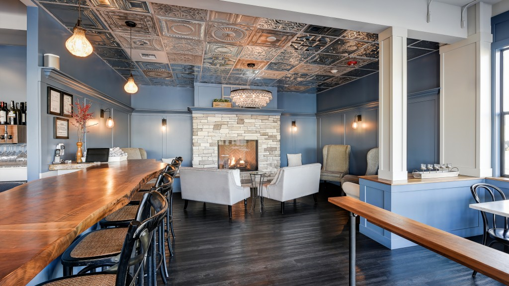
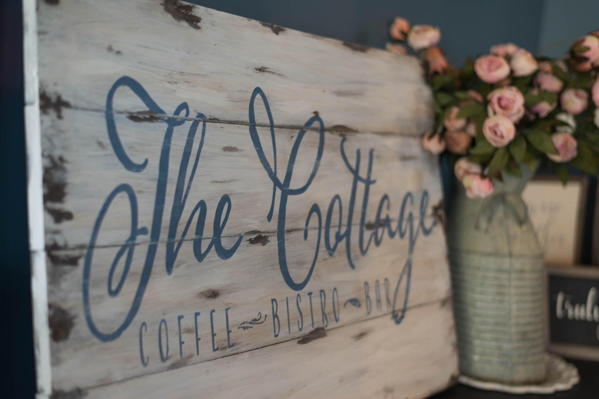

Work in Progress 1
Revised: The inspiration of my website design is going to be that of a beach coffee shop. I want it to be simple yet professional, as it will be portraying school work. However, I do not my website to be overwhelmed with words and fluff. When I think of a beach coffee shop, I think of it as a place to go to grab a cup of coffee that’s very peaceful and calming. I would like to incorporate a blue green template with maybe some touches of browns or tan to break it up.
I would like there to be a title bar on every page so that it is a simple task to go from one page to another, just as going with the flow is on island time. As for the fonts, I would like to use a very smooth and elegant font, potentially a cursive. The curves in the cursive font can slightly resemble waves calmly rolling in the distance. I would like my website to be general symmetrical because when I think of symmetry I think of it as being more visibly appealing to the eye, just as the beach is. I would like there to be a thin banner along both sides of the menu bar. In addition, I would like some of my menu items to have drop down menus. Overall, I would like my website to have a very clean and calming feel.
The photos below will serve as inspiration for my website. Although I have very little coding experience, I am not sure how attainable this design will be, however, I am willing to give it a try!


Original: For my website I will be designing I would like it to be easy to navigate, aesthetically pleasing, and simple. I would like there to be a title bar on every page so that it is a simple task to go from one page to another. I also would like to use majority neutral colors and include photos where necessary. I am thinking I will create a “travel” website based off of places I traveled during my semester abroad. I will include an about me page and have different pages on the different locations I went to. On each of the location pages I will include ideas of where to eat, what to see, and things to do.
My intended audience would be other study abroad students because I am able to relate to them the most. The vision of my website is for it to look something like the attached images below. I am not sure how easy that will be for me to complete because I have very limited coding experience but I am willing to give it a try! The title font on the Lily website would be ideal for my website. I like the simplicity of the color schemes both websites have. I do not want my webpages to have an overwhelming amount of information on them. For the most part I would like everything on my website to be centered.